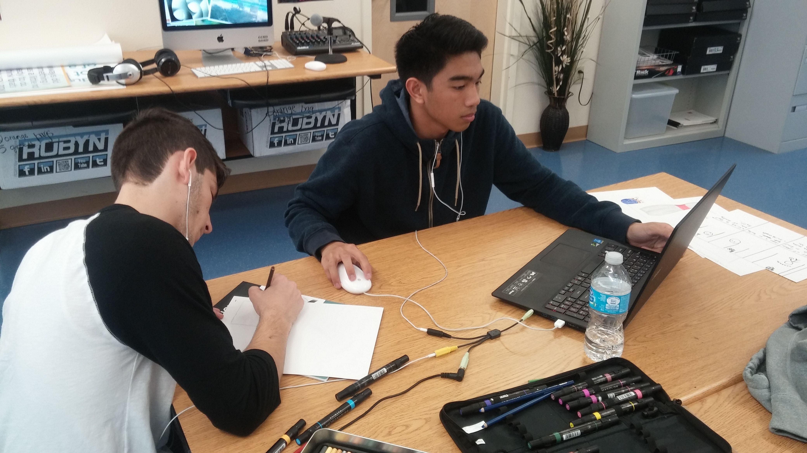

We decided to continue with the four page website, but we put all relative information into two pages - the Intro and the Final. Developer notes like this can be found on the Dev page, and will be kept away from the main information on the site. We hope our site will be easy to use, as the information will be organized to be easy to find.
We also got rid of the blue and violet colors and went with more subtle and relaxing colors. Our logo of bowling pins and the ball still pops out to the eye in the corner of our site as it will also be an operable button to help navigate the website. With the more subtle colors we determined that there will be nothing to distract you from the core of the site, the information, and the videos being put on there.
Here is the storyboard made by the Video Game students in which a main character and a side character are competing against each other in a game of bowling. In a dramatic period of suspense, the side character scores a strike, winning the game. The main character then becomes sad about his loss.